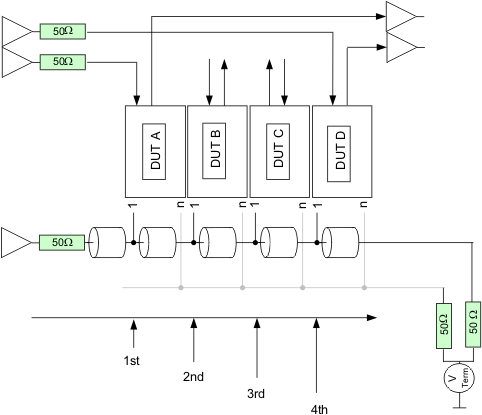
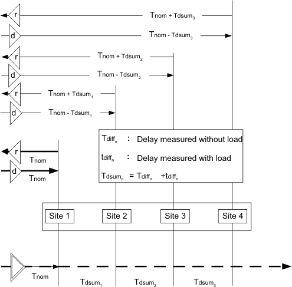

Delay measurement concepts for driver sharing
The standard fixture delay measurement that is used to compensate driver and receiver skew of connections to and from the DUT needs to be complemented by additional measurements for a driver sharing environment. In order to measuring skew you need to provide a sharing configuration file for your particular driver sharing environment. This sharing configuration file will be used for the continuity test method as well. The resulting FXDL file will be used during device testing.
Testing memory devices requires a test fixture to accommodate the device sockets for the site or sites. This test fixture contains cable connections between the pogo pin plane of the test head to the individual device socket pads. For manufacturing applications a test fixture accommodates several device sockets. To compensate for cable length variations a standard fixture delay measurement tool is provided by SmarTest.
A detailed description of the Fixture Delay Tool is given in the chapter Fixture Delay Tool.
Shared and non-shared drivers
In a shared driver environment the standard fixture delay measurement results must be adapted. Below, the concept of fixture delay measuring for a shared driver environment is explained using sharing between four DUTs as an example. This concept may be expanded to sharing more sites.
When multiple test sites are sharing drivers you have to bear in mind that there are always shared and unshared pins connected to the DUTs. DUT output lines (to test system receivers) are never shared, but there may be DUT input lines without sharing drivers.

Timing delay considerations
For shared pins, drive signals arrive at DUT A first, and then DUT B, DUT C, and DUT D. Compensating the fixture delay for DUT A first means that DUT A can be used as a reference point for the timing of the devices that follow on the chain. All delay values of the other sites can be aligned to this reference point.
Although, shared driver edges will arrive by a time TDiff later at DUT B than at DUT A, the non-shared pins of DUT B still receive drive signals at the same time as DUT A. To synchronize shared and non-shared pins of DUT B, the drive/compare edges get postponed by TDiff for non-shared pins of DUT B. This can be done by modifying the original fixture delays for non-shared pins of DUT B.
TDR measurement
Measuring a fixture delay is based on Time Domain Reflection (TDR) measurement. In order to measure the round trip time of an edge from the pogo plane to the device pad and back a in a fly-by connection, the DUT pad has to be shorted to ground.
The measurement needs to be repeated as many times as there are sharing sites in a chain. The pad grounding is moved for each measurement to the next site in the chain. For example, in a 4-site sharing environment, four fixture delay (fxdl) files are generated. When there are more than one sharing group, the groups get measured in parallel with all measured delays contained in the four fxdl files. After fixture build, these measurements are made by the manufacturer. The fixture delay files generated are delivered with the fixture. They form the base for the delay measurements on the customer floor.
To increase accuracy, another measurement needs to be taken, this time on the customers floor. The delay between the sites on a shared line was measured at manufacturing without a load on the input pads in the sites that were not shorted. In reality, during device test, there are devices in each socket, which represent a capacitive load. This load adds to the propagation delay caused by the line length alone. To measure this additional delay, two additional fxdl measurement have to be applied. This time only with the last socket in a chain being shorted and the other sockets being loaded with golden devices.
For high volume manufacturing a HiFix may have up to 64 or even 256 sites. That means, in case of a by 4 sharing, up to 32 groups of sites are sharing groups . It has been shown, that all sharing groups show the same delay when measured with loaded golden devices. Therefore, measuring one sharing socket board with loading devices suffices for all other groups.
Modify measurements
For each test system channel used to drive or receive a signal, the fixture delay file has to be modified using the measurement results made with loaded sockets. This modification has to be made to the non-shared pins as well.
For non-shared input pins of DUT n+1:
new fixture delay = original fixture delay - (Tdlunloadedn + Tdlloadedn)
For output pins of DUT n+1:
new fixture delay = original fixture delay + (Tdlunloadedn + Tdlloadedn)
DUT1 is the first DUT in a row on a socket board and is nearest to the driver pin.

To facilitate the merging of all measured fixture delays into one fixture delay file for use during test, the fd_merge tool is provided with the MTP software. This tool merges the input delay file automatically.